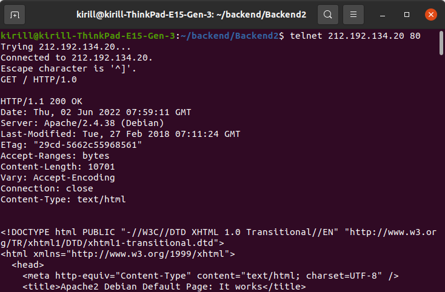
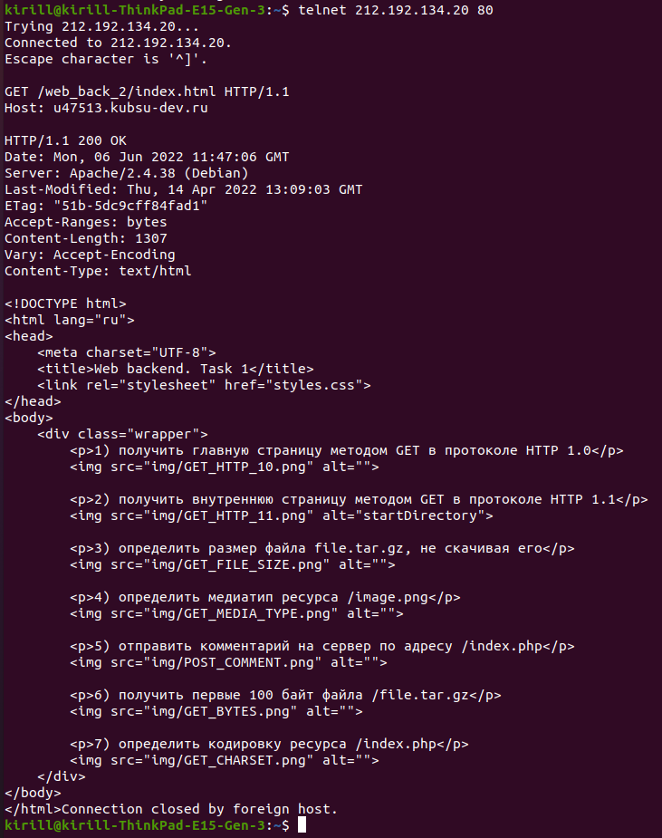
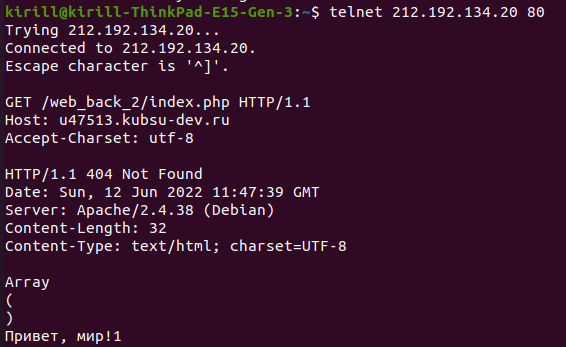

Получить главную страницу сетодом GET 1.0

Получить главную страницу сетодом GET 1.1 
Определить размер файла file.tar.gz, не скачивая его
Oпределить медиатип ресурса /image.png
Oтправить комментарий на сервер по адресу /index.php
Получить первые 100 байт файла /file.tar.gz
Oпределить кодировку ресурса /index.php.
